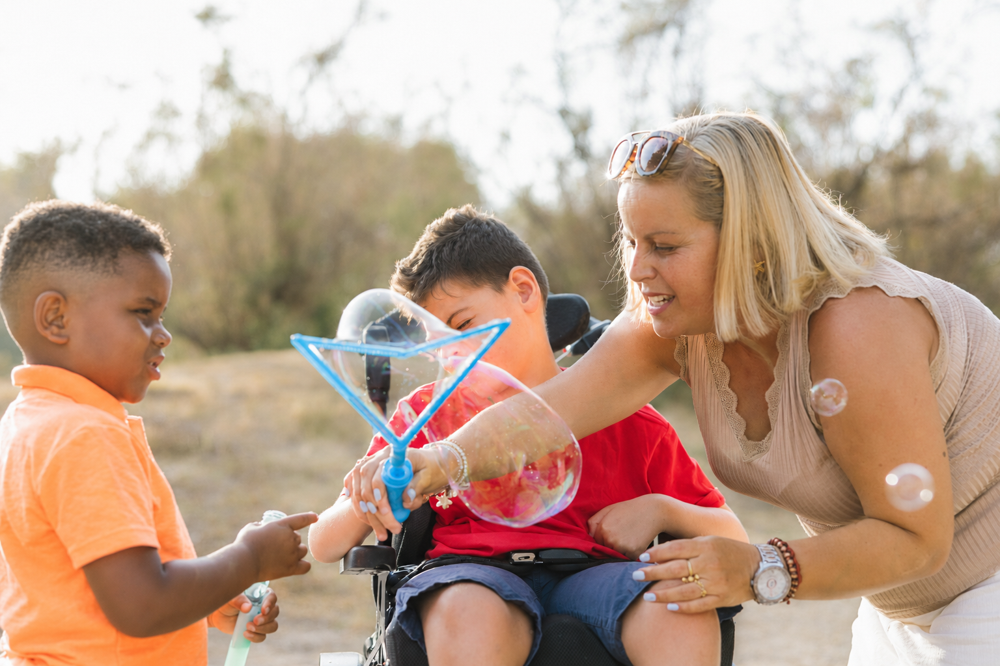
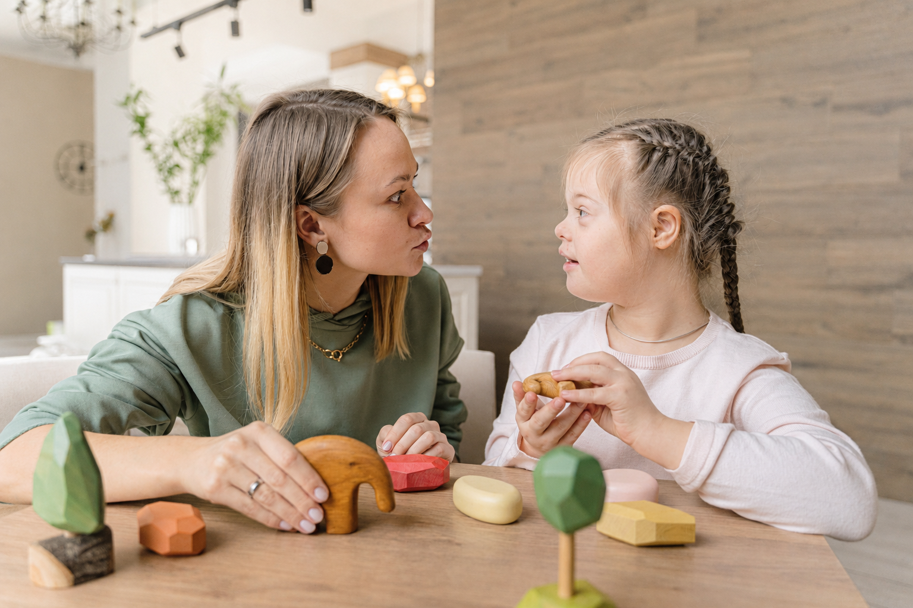

Schulbegleitung & Kitassistenz
Unterstützung bei Orientierung, Übergängen, Pausen und dem Zugang zu Unterrichts- und Spielmaterialien – damit Teilhabe im Bildungsalltag gelingt.
Für Eltern und Angehörige
Wir stehen Ihnen von Anfang an zur Seite – bei Fragen zu Schulbegleitung, Familienhilfe und Autismustherapie, bei der Antragstellung und bei der passenden Unterstützung für Ihr Kind.
Orientierung für Familien
Für eine gelungene Leistungserbringung ist ein guter Austausch zwischen allen Beteiligten unerlässlich. Das stellen wir durch enge Kommunikationsstrukturen und eine hohe Transparenz im gesamten Prozess sicher.
Wir bieten Ihnen genug Freiraum und Zeit, uns kennenzulernen – denn eine gute Beziehung bildet das Grundgerüst unserer Arbeit. Auch im weiteren Verlauf initiieren wir regelmäßige Gespräche, um Erwartungen und den Fortschritt der Leistungen gemeinsam auszuwerten.
Ob Schulbegleitung, Familienhilfe, Autismustherapie oder Kitassistenz: Wir nehmen uns die Zeit, die Sie und Ihr Kind brauchen.

Wir hören Ihnen zu und finden gemeinsam mit Ihnen die Lösungen, die Ihr Kind benötigt.
Direkt zum passenden Bereich
Welche Angebote infrage kommen – von Schulbegleitung über Familienhilfe bis zur Autismustherapie.
Leistungen für FamilienOrientierung zum Ablauf: von der ersten Anfrage über die Antragstellung bis zur laufenden Begleitung.
Ablauf Schritt für SchrittVon der Auswahl der Begleitperson bis zur Vertretung im Krankheitsfall – klare Haltung statt Versprechen.
Unsere HaltungIndividuelle Unterstützung
Unser Angebot richtet sich an Kinder und Jugendliche mit einer (drohenden) seelischen, körperlichen und/oder geistigen Behinderung – sowie an Familien mit unterschiedlichem Unterstützungsbedarf.
Die inhaltliche Ausgestaltung ist ganz auf die individuellen Erfordernisse und Bedürfnisse des jungen Menschen ausgerichtet. Maßgeblich sind der festgestellte Bedarf, die bewilligte Leistung und die gemeinsam vereinbarten Ziele.
Unterstützung bei Orientierung, Übergängen, Pausen und dem Zugang zu Unterrichts- und Spielmaterialien – damit Teilhabe im Bildungsalltag gelingt.
Zum Beispiel Erziehungsbeistandschaft oder sozialpädagogische Familienhilfe (§ 31 SGB VIII) – Hilfe zur Selbsthilfe im gewohnten sozialen Bezugssystem.
Fachliche Therapie und Begleitung bei Autismus – abgestimmt auf individuelle Bedarfe, den Alltag und die familiären Rahmenbedingungen.
Stundenweise Betreuung zu Hause, im Sozialraum oder in unseren Räumen – Freiräume für Eltern, wenn sie Zeit für sich brauchen.
Unterstützte Kommunikation, TEACCH-orientierte Ansätze, Materialien in leichter Sprache und systemisches Arbeiten gehören zu unserem Methodenkoffer.
Unterstützung soll nicht dauerhaft Abhängigkeit schaffen. Vorhandene Fähigkeiten werden gestärkt – Schritt für Schritt mehr selbstständige Teilhabe.
Für Eltern und Angehörige
Wir bieten unterschiedliche Leistungen an, um Kinder und Jugendliche mit und ohne Behinderung sowie Familien zu unterstützen – in der Schule, in der Therapie, in der Freizeit oder im familiären Umfeld.
Je nach individuellem Bedarf greifen wir auf Mitarbeitende mit unterschiedlichen Qualifikationen zurück – von Sozialpädagogik bis Autismusförderung.
Auf Wunsch beraten wir Sie schon bei der Leistungsbeantragung beim zuständigen Jugendamt oder Eingliederungshilfeträger.
Sie werden in Entscheidungen einbezogen – von der Auswahl der passenden Begleitperson bis zur Abstimmung der benötigten Leistungen.
Wir halten Sie auf dem Laufenden und unterstützen Sie auch bei gemeinsamen Gesprächen mit Schule, Jugendamt oder Leistungsträger.
Sollte einmal eine Mitarbeitende oder ein Mitarbeitender erkranken, organisieren wir innerhalb kürzester Zeit eine fachlich geeignete Vertretung.
Bei Bedarf unterstützen wir in der Kommunikation mit Behörden und vermitteln zwischen Ihren Interessen und dem zuständigen Träger.
Klare Schritte
Rufen Sie uns an oder schreiben Sie uns. Wir besprechen mit Ihnen den Bedarf und klären erste Fragen – unverbindlich und verständlich.
Wir unterstützen Sie bei der Antragsstellung beim zuständigen Jugendamt oder Eingliederungshilfeträger – wenn Sie das wünschen.
Nach der Bewilligung laden wir Sie zu einem ersten Kennenlerngespräch ein. Dort besprechen wir den Bedarf und Ihre Erwartungshaltung.
Die passende Begleitperson wird eingeführt. Rollen, Kommunikationswege und organisatorische Abläufe sind vorher abgestimmt.
Nach ersten Erfahrungen laden wir Sie zu einem gemeinsamen Reflexionsgespräch ein, um die Passgenauigkeit der Unterstützung zu prüfen.
Wir halten Sie regelmäßig auf dem Laufenden und begleiten Sie auch bei Gesprächen mit Jugendamt, Schule oder Eingliederungshilfe.
Qualität im Alltag
Deshalb machen wir sichtbar, durch welche Strukturen Verlässlichkeit für Ihr Kind und Ihre Familie im Arbeitsalltag gesichert wird.
Fachlichkeit allein entscheidet nicht. Auch Persönlichkeit, Kommunikationsfähigkeit und die Passung zu Ihrem Kind sind wesentlich – und werden mit Ihnen abgestimmt.
Unsere Mitarbeitenden werden fachlich angeleitet und erhalten Möglichkeiten zur kontinuierlichen Weiterentwicklung.
Erwartungen und Fortschritte werden gemeinsam ausgewertet – nicht erst am Ende einer Maßnahme.
Die vereinbarten Ziele bilden die Grundlage für die Betrachtung des Verlaufs und möglicher Anpassungen.
Ihre Rückmeldungen werden nicht nur entgegengenommen, sondern systematisch zur Verbesserung der Arbeit genutzt.
Familie, Schule, Leistungsträger und GFI werden nicht als getrennte Bereiche betrachtet. Austausch ist die Grundlage tragfähiger Unterstützung.
Fachlichkeit mit persönlicher Passung
Je nach individuellem Bedarf können wir auf Mitarbeitende mit unterschiedlichsten Qualifikationen zurückgreifen – zum Beispiel Sozialpädagoginnen und Sozialpädagogen, Expertise im Bereich der Autismusförderung oder pädagogische Mitarbeitende mit Erfahrung bei herausfordernden Verhaltensweisen.
Entscheidend ist, welche fachlichen und persönlichen Kompetenzen für Ihr Kind und das Umfeld erforderlich sind.

Mit internen Schulungen, fachlicher Begleitung, Supervision und den Angeboten der GFI-Akademie schaffen wir Strukturen für eine kontinuierliche Qualifizierung.
Stimmen von Familien
Wir hatten Probleme mit unserem alten Schulbegleiter, der durch einen anderen Anbieter gestellt worden war. Es wurde sich auf unsere Kontaktanfrage direkt bei uns gemeldet und uns schnell ein neuer Schulbegleiter organisiert. All dies trotz Corona!
Die Eltern und ich sind mit den Leistungen unserer Inklusionsbegleiterin sehr zufrieden. Wir stehen im wöchentlichen Austausch. G. mag sie und freut sich über ihre Begleitung, über die gemeinsamen Aktivitäten.
Wir sind mit den Leistungen der Schulbegleitung sehr zufrieden. Unsere Anliegen werden immer schnell bearbeitet und eine Lösung gefunden. Im Krankheitsfall wurde immer eine Ersatzkraft gefunden!
Wir sind insgesamt sehr zufrieden. Unsere Schulbegleitung wurde sorgfältig ausgewählt und passt gut zu unserem Kind. Wir empfehlen Euch uneingeschränkt weiter und sind froh, so gut betreut zu werden.
Die Firma hat ganz viel Herz. Wir können sie uneingeschränkt weiterempfehlen!
Unser Sohn braucht seit vielen Jahren eine Inklusionsassistenz und wir hatten noch nie ein so gutes Zusammenspiel zwischen Anbieter, Eltern, Schule und I-Helferin. Es wird stets Kontakt gehalten und versucht, Lösungen und Entlastungen zu finden.
Ich habe den Eindruck, dass unsere Schulbegleitung ihre Arbeit sehr ernst nimmt und Freude an ihrer Tätigkeit hat.
Direkte Zuständigkeit
Ob erste Orientierung oder Rückfrage zu einer bestehenden Begleitung: Sie erreichen bei uns nicht irgendeine zentrale Stelle, sondern die für Ihre Region zuständige Ansprechperson.
Sie sind sich bei der Zuständigkeit nicht sicher? Wir leiten Ihre Anfrage intern an die passende Fachkraft weiter.
Wählen Sie eine Region aus. Anschließend sehen Sie die zuständige Ansprechperson und die passenden nächsten Schritte.
Gut zu wissen
Für Ihr Kind steht die passende individuelle Begleitung im Vordergrund. An manchen Schulen wird Unterstützung zusätzlich in abgestimmten Teammodellen organisiert – dem sogenannten infrastrukturellen Pooling.
Ob ein solches Modell für die Schule Ihres Kindes relevant ist, klären Schule, Leistungsträger und GFI gemeinsam. Für Sie als Familie bleibt entscheidend: Der individuelle Bedarf Ihres Kindes bleibt Maßstab.
Häufige Fragen
Antworten zu Leistungen, Antrag, Auswahl und Austausch – kompakt für Eltern und Angehörige.
Nein. Sie können sich auch zur Orientierung melden. Wir besprechen den Bedarf und unterstützen Sie auf Wunsch bereits bei der Antragsstellung.
Je nach Bedarf kommen Schulbegleitung, Kitabegleitung, sozialpädagogische Familienhilfe, Autismustherapie, Inklusionsassistenz oder der familienentlastende Dienst infrage. Welche Leistung passt, klären wir gemeinsam. Eine Übersicht finden Sie auf der Seite Leistungen.
Die Zuständigkeit richtet sich nach dem individuellen Fall. Leistungen zur Teilhabe an Bildung können insbesondere über die Eingliederungshilfe nach dem SGB IX oder bei einer seelischen Behinderung über § 35a SGB VIII erfolgen. Die Entscheidung liegt beim zuständigen Leistungsträger.
Berücksichtigt werden der individuelle Unterstützungsbedarf, erforderliche Kompetenzen und die persönliche Passung. Sie werden in die Auswahl einbezogen.
Die zuständige GFI-Fachkraft prüft Vertretungsmöglichkeiten und organisiert möglichst schnell eine fachlich geeignete Vertretung. Die Kommunikation mit Ihnen wird koordiniert.
Wir halten Sie regelmäßig auf dem Laufenden. Nach den ersten Wochen findet ein Reflexionsgespräch statt; weitere Abstimmungen folgen dem Verlauf der Begleitung.
Ja. Auf Wunsch unterstützen wir Sie bei gemeinsamen Gesprächen mit Jugendamt oder Eingliederungshilfeträger und helfen, Erwartungen und Fortschritte nachvollziehbar zu machen.
Hilfreich sind Region, grober Unterstützungsbedarf, gewünschter Beginn und ob bereits ein Antrag oder eine Bewilligung vorliegt. Ausführliche medizinische Unterlagen gehören nicht in das Online-Formular.
Beratung anfragen
Eine gute Beratung beginnt nicht mit einem langen Formular, sondern mit den richtigen Eckdaten.
In zwei kurzen Schritten übermitteln Sie uns Ihre Kontaktdaten und die Situation Ihres Kindes. Die zuständige Fachkraft meldet sich mit den nächsten sinnvollen Schritten.
Wir prüfen die regionale Zuständigkeit und leiten Ihre Angaben an die passende Ansprechperson weiter. Sie erhalten anschließend eine Rückmeldung zu den nächsten Schritten.